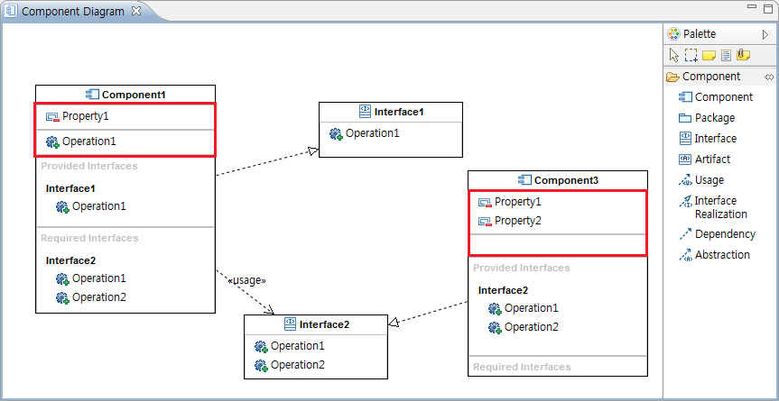
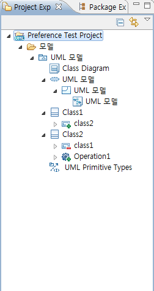

1. 환경 설정
환경 설정은 UML 모델러 메뉴의 [Windows] > [Preference] 를 통해서 열수 있습니다.

<그림 1. 환경 설정 실행 메뉴>
메뉴를 통해서 환경 설정을 실행하게 되면 아래와 같은 창이 나타납니다. UML 모델러의 환경 설정은 [NEXCORE] > [UML] 카테고리 하위에 존재하고 구성은 크게 Appearance, Diagram, Project Explorer 세 가지로 나누어져 있습니다.

<그림 2. UML 모델러 환경 설정 구조>
1.1 Appearance 환경 설정
환경 설정의 Appearance는 다이어그램에 보여지는 UML Elements의 표현에 대한 설정입니다. UML Notation, 주석, 노트의 세 가지 설정 부분이 존재하고 각 설정을 통하여 색상 및 글꼴에 대한 기본 설정에 대하여 변경할 수 있습니다.

<그림 3. Appearance 설정 페이지>
변경하고 싶은 색상의 버튼을 선택하면 아래와 같이 색을 선택할 수 있는 색 선택 다이얼로그가 나타나게 되고 색을 선택한 후 확인 버튼을 눌러 선택을 완료합니다. 이후 [Restore Defaults] 버튼을 눌러서 기본 설정 값으로 되돌아 갈 수도 있고, [Apply] 버튼을 눌러서 선택한 색상을 적용할 수도 있습니다. 이 [Restore Defaults]와 [Apply] 두 버튼은 환경 설정의 모든 페이지에서 동일한 역할을 수행합니다.

<그림 4. Appearance 설정 변경>

<그림 5. Appearance 설정 변경 전 다이어그램>

<그림 6. Appearance 설정 변경 후 다이어그램>
1.2 Diagram 환경 설정
Diagram 카테고리는 다이어그램 일반, 시퀀스 다이어그램, 액티비티 다이어그램, 컴포넌트 다이어그램, 클래스 다이어그램으로 나누어져 있습니다. 다이어그램 일반에는 전체 다이어그램 공통의 환경 설정이 있고 각 Diagram의 환경 설정에는 해당 다이어그램에 관한 환경 설정이 있습니다.
1.2.1 다이어그램 일반 환경 설정

<그림 7. 다이어그램 일반 환경 설정 페이지>
Commonly 페이지의 환경 설정은 모든 다이어그램에 공통적으로 존재하는 연결선(Connection)의 이름 및 기타 정보의 표현 유무를 설정하는 페이지 입니다. 연관 라벨과 역할 라벨은 UML Relation 중 Association에 적용되는 설정입니다. 연관 라벨은 Association의 다중성을 나타내고 역할 라벨은 Association의 역할 이름(roll name)을 나타냅니다.

<그림 8. Association 환경 설정 적용 전>

<그림 9. Association 환경 설정 적용 후>
1.2.2 액티비티 다이어그램 환경 설정
액티비티 다이어그램에서 사용하는 Connection (Control Flow, Object Flow) 의 꺾임 여부를 설정할 수 있습니다.

<그림 10. 액티비티 다이어그램 환경 설정>
꺾은선 사용 여부에 따른 다이어그램 내의 이미지 변화는 다음과 같습니다.

<그림 11. 꺾은선 적용 전>

<그림 12. 꺾은선 적용 후>
1.2.3 클래스 다이어그램 환경 설정
추후 구현 예정
1.2.4 컴포넌트 다이어그램 환경 설정
컴포넌트 다이어그램 환경 설정에서는 컴포넌트 내부에 표시되는 인터페이스(Provided/Required Interface)의 오퍼레이션 표시 여부 설정과 컴포넌트의 프로퍼티/오퍼레이션의 표시 여부를 설정할 수 있습니다.

<그림 13. 컴포넌트 다이어그램 환경 설정>

<그림 14. 컴포넌트 내부 인터페이스의 오퍼레이션 표시 적용>

<그림 15. 컴포넌트 내부 인터페이스의 오퍼레이션 표시 미적용>

<그림 16. 컴포넌트 내부 프로퍼티/오퍼레이션 표시 적용>

<그림 17. 컴포넌트 내부 프로퍼티/오퍼레이션 표시 미적용>
1.2.5 시퀀스 다이어그램 환경 설정
시퀀스 다이어그램 페이지는 시퀀스 다이어그램과 관련하여 메시지와 라이프라인의 표현에 대한 설정들을 할 수 있습니다.

<그림 18. 시퀀스 다이어그램 환경 설정>
각각의 시퀀스 다이어그램 관련 설정들이 변경 후에 적용되는 모습은 다음과 같습니다.

<그림 19. 동기 메시지 생성 시 Reply 생성>

<그림 20. 동기 메시지 생성 시 Reply 생성 안 함>

<그림 21. LifeLine에 이름 표시 안 함>

<그림 22. LifeLine에 이름 표시 함>

<그림 23. 메시지의 타입/파라미터 모두 표시>

<그림 24. 메시지의 타입만 표시>

<그림 25. 표시 없음>
Project Explorer 페이지에서는 UML 모델러의 프로젝트 탐색기에서 UML 요소들 표시에 사용하는 필터를 설정합니다.

<그림 26. Project Explorer 환경 설정 페이지>

<그림 27. Project Explorer 환경 설정 페이지의 기본 값>
사용자가 임의로 원하는 요소들을 필터에 추가할 수도 삭제할 수도 있습니다.

<그림 28. Project Explorer 필터 변경>
위의 그림과 같이 필터에 [Class] 항목을 추가한 경우 [Class] 요소가 필터링되어 프로젝트 탐색기에 나타나지 않습니다.

<그림 29. Project Explorer 필터 적용 전>

<그림 30. Project Explorer 필터 적용 후>